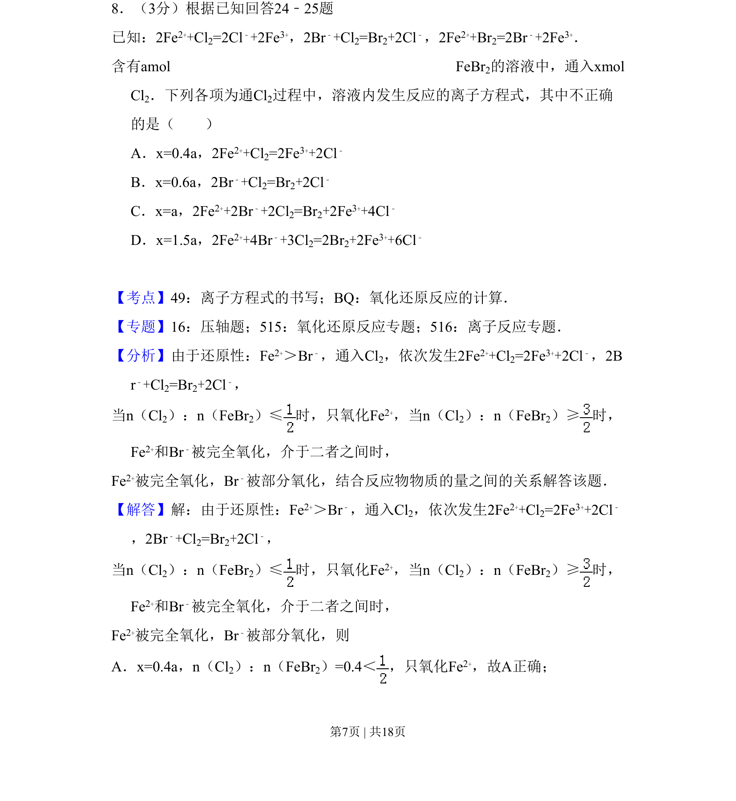
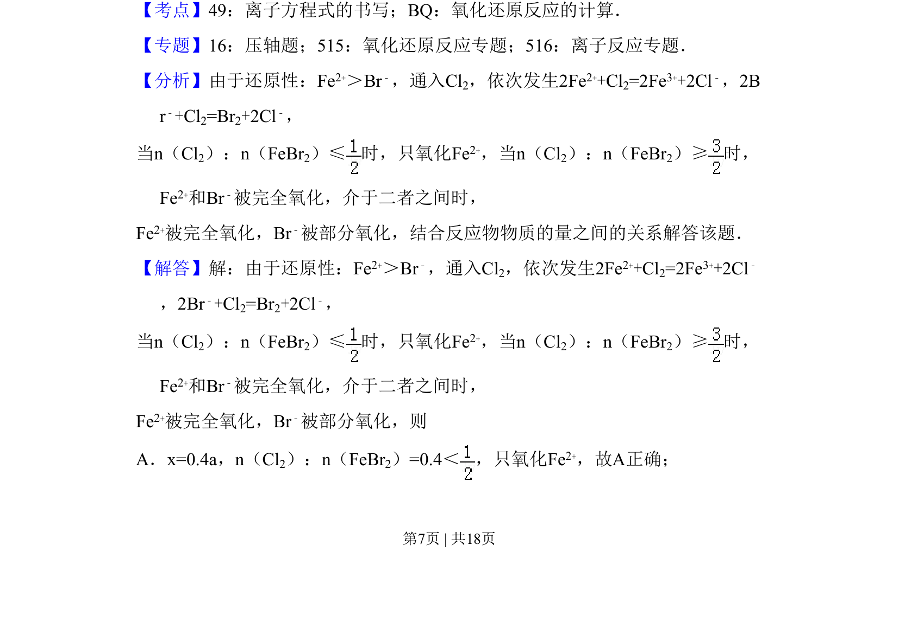
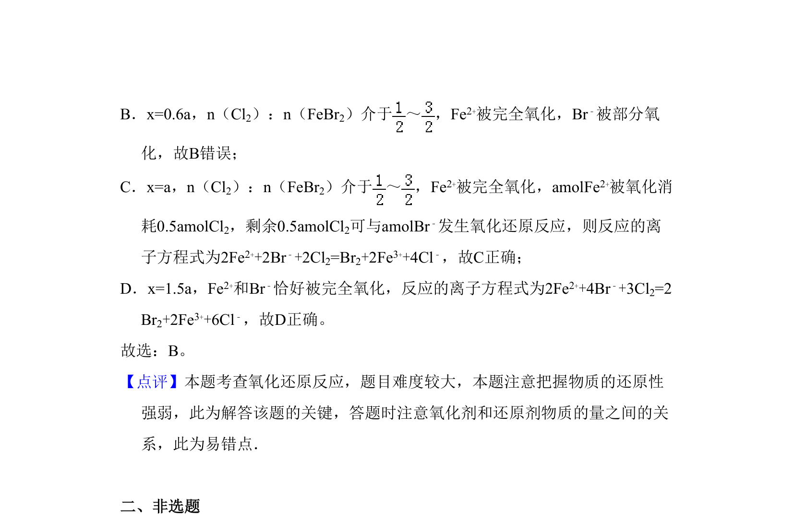

考点：离子方程式书写 氧化还原反应 还原性强弱顺序

该题考查氧化还原反应中离子方程式的书写及反应先后顺序的判断，涉及物质的量相关计算。


📄 原 PDF 第 7 页：
素材/真题/吉林/2008-2024·（吉林）化学高考真题/2009年高考化学试卷（全国卷Ⅱ）（解析卷）.pdf
8．（3分）根据已知回答24﹣25题 已知：2Fe2++Cl2=2Cl﹣+2Fe3+，2Br﹣+Cl2=Br2+2Cl﹣，2Fe2++Br2=2Br﹣+2Fe3+． 含有amol FeBr 2的溶液中，通入xmol Cl2．下列各项为通Cl2过程中，溶液内发生反应的离子方程式，其中不正确 的是（ ） A．x=0.4a，2Fe2++Cl2=2Fe3++2Cl﹣ B．x=0.6a，2Br﹣+Cl2=Br2+2Cl﹣ C．x=a，2Fe2++2Br﹣+2Cl2=Br2+2Fe3++4Cl﹣ D．x=1.5a，2Fe2++4Br﹣+3Cl2=2Br2+2Fe3++6Cl﹣
【考点】49：离子方程式的书写；BQ：氧化还原反应的计算．菁优网版权所有 【专题】16：压轴题；515：氧化还原反应专题；516：离子反应专题． 【分析】由于还原性：Fe2+＞Br﹣，通入Cl2，依次发生2Fe2++Cl2=2Fe3++2Cl﹣，2B r﹣+Cl2=Br2+2Cl﹣， 当n（Cl2）：n（FeBr2）≤时，只氧化Fe 2+，当n（Cl2）：n（FeBr2）≥时， Fe2+和Br﹣被完全氧化，介于二者之间时， Fe2+被完全氧化，Br﹣被部分氧化，结合反应物物质的量之间的关系解答该题． 【解答】解：由于还原性：Fe2+＞Br﹣，通入Cl2，依次发生2Fe2++Cl2=2Fe3++2Cl﹣ ，2Br﹣+Cl2=Br2+2Cl﹣， 当n（Cl2）：n（FeBr2）≤时，只氧化Fe 2+，当n（Cl2）：n（FeBr2）≥时， Fe2+和Br﹣被完全氧化，介于二者之间时， Fe2+被完全氧化，Br﹣被部分氧化，则 A．x=0.4a，n（Cl2）：n（FeBr2）=0.4＜，只氧化Fe 2+，故A正确；